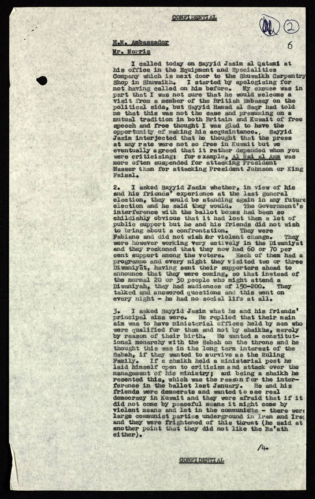

ديسمبر ١٩٦٧ · رسالة من السفارة البريطانية ومحضر محادثة
دبلوماسي بريطاني يزور جاسم القطامي في مكتبه بالشويخ
ما هي
يزور أحد أعضاء السفارة جاسم القطامي في شركة المعدات والتخصصات بجوار منجرة الشويخ. ويتحدثان عن حرية التعبير، فيعلّق جاسم بأن الصحافة في الكويت ليست حرة كثيرا. ويدعوه جاسم إلى زيارته مجددا.
أهميتها
تحدد موقع مكتب جاسم التجاري في الشويخ عام ١٩٦٧ وكلماته عن حرية الصحافة.
من المقصود
هو جاسم القطامي نفسه الوارد اسمه الكامل في وثائق أخرى: مدير الشرطة الذي استقال وقت أزمة السويس، ثم النائب القومي في مجلس الأمة.
صور الصفحات


النص الأصلي
Page 5, British Embassy, Kuwait, December 1967:
I called the other day on Jasim al Qatami (No. 62 in our 1966 Leading Personalities Report) and enclose a copy of a record of the conversation. I hope to follow up his invitation to call from time to time.
Page 6:
I called today on Sayyid Jasim al Qatami at his office in the Equipment and Specialities Company which is next door to the Shuwaikh Carpentry Shop in Shuwaikh. I started by apologising for not having called on him before. … Sayyid Jasim interjected that he thought that the press at any rate were not so free in Kuwait but we eventually agreed that it rather depended whom you were …
المصادر
الأرشيف الوطني البريطاني في لندن، رقمنه الأرشيف الرقمي للخليج العربي (agda.ae). الصور منشورة بإذن من الأرشيف الوطني البريطاني.
مرجع الأرشيف
- FCO 8/616 · Government appointments
كيف كُتب هذا النص: نُسخ من قراءة الأرشيف لنص الصورة، وصُحح بالمقارنة مع الصورة حيث كانت القراءة مشوهة. وتشير … إلى نص محذوف. الترجمة العربية من Claude، يرجى مراجعتها.
افتح في الموقع التفاعلي